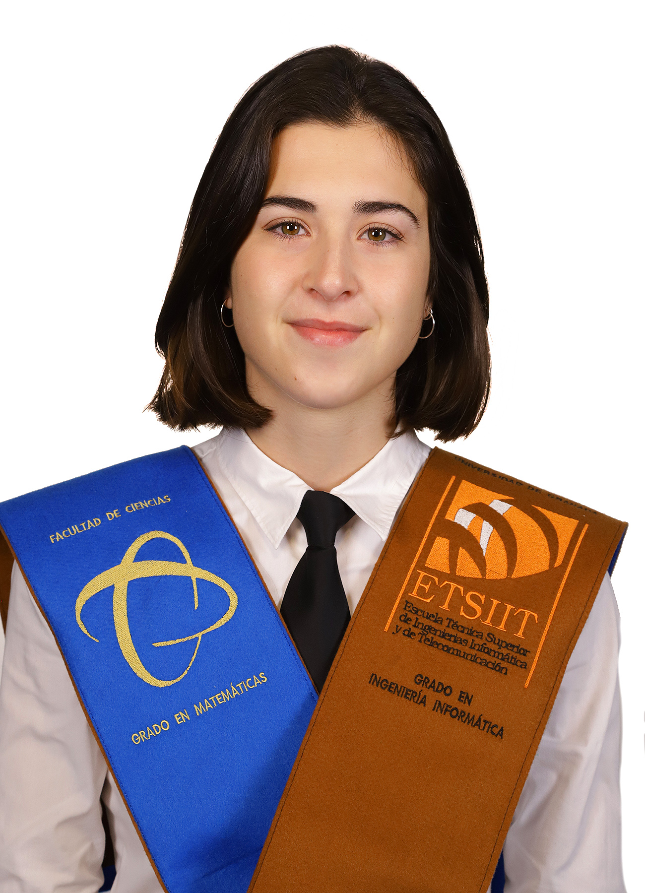

Dirección de correo: jorgbr01@ucm.es
Mi tiempo libre lo dedico principalmente a jugar al tenis o escuchar música. Siempre me ha gustado todo lo relacionado con los animales, asique de vez en cuando voy a visitar granjas como voluntario.
Dirección de correo: martgo81@ucm.es
Mis aficiones son principalmente actividades al aire libre con amigos, destacando deportes como el esquí, la escalada y el baloncesto. Disfruto especialmente de mi tiempo libre escuchando música de diferentes géneros.
Dirección de correo: alvgom20@ucm.es
Me gusta todo lo relacionado con el deporte, especialmente fútbol y fórmula 1, aunque no practico ninguno. Otra de mis aficiones es salir a tomar algo con mis amigos o ir a las fiestas de los pueblos alrededor del mío.